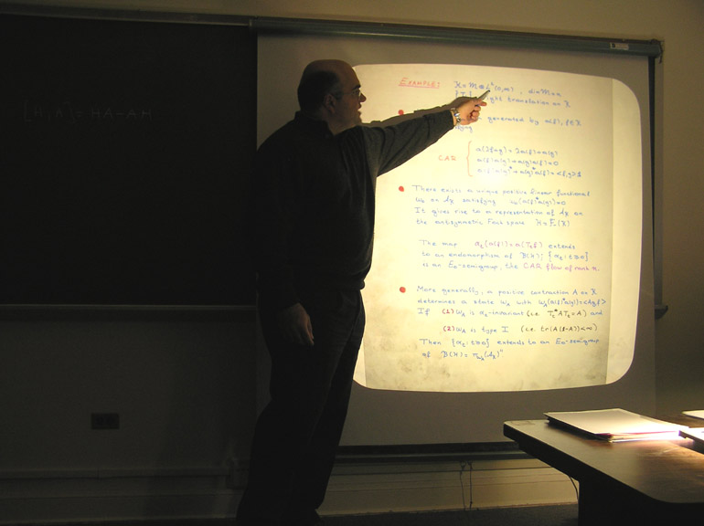
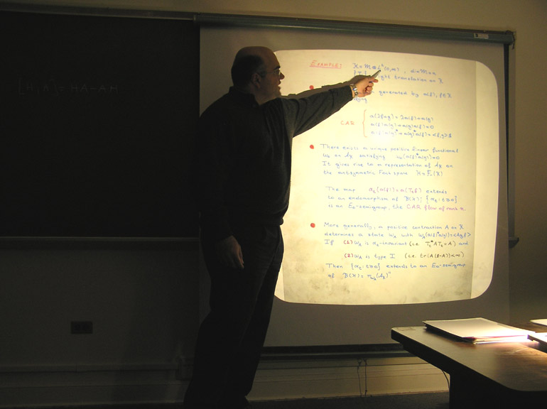

Seminar in operator theory and operator algebras (MATH 9310)
Spring 2018
The seminar, organized by David Sherman, meets Tuesdays 4-5 in Kerchof 326.
February 13 |
Adam Dor-On, TechnionC*-envelopes of tensor algebras and their applications to dilations and Hao-Ng isomorphismsAn effective model, introduced by Fowler, for studying many operator algebra constructions is via product systems of C*-correspondences over quasi-lattice ordered semigroups. We use the gauge invariant uniqueness theorem of Carlsen, Larsen, Sims and Vittadello, and a new dilation technique to show that for many product systems the Cuntz-Nica-Pimsner algebra is always the C*-envelope of the Nica-tensor algebra. This result was implicitly conjectured in the literature, and has interesting applications in several different places. First, we resolve a problem of Skalski and Zacharias on the dilation of Nica-covariant isometric representations of product systems to unitary representations. Second, we show that the analogue of the Hao-Ng isomorphism for generalized discrete group gauge-actions in Fowler's context has an affirmative answer in many cases, generalizing a recent result of Katsoulis in the single correspondence case. Finally, we generalize C*-envelope results of Katsoulis and Kribs in the context of higher rank graphs and single correspondence case, and provide a simpler alternative proof of a C*-envelope result of Davidson, Fuller and Kakariadis in the context of C*-dynamical systems. *This is based on joint work with Elias Katsoulis. |
February 20 |
Raphael Clouatre, University of ManitobaCompletely bounded analogues of the Choquet and Shilov boundaries for operator spacesGiven a unital operator algebra, it is natural to seek the smallest C*-algebra generated by a completely isometric image of it, by analogy with the classical Shilov boundary of a uniform algebra. In keeping with this analogy, one method for constructing the so-called C*-envelope is through a non-commutative version of the Choquet boundary. It is known that such a procedure can be also be applied to operator spaces, although in this case the envelope has less structure. In this talk, I will present a certain completely bounded version of the non-commutative Choquet boundary of an operator space that yields the structure of a C*-algebra for the associated Shilov boundary. I will explain how the resulting C*-algebras enjoy some of the properties expected of an envelope, but I will also highlight their shortcomings along with some outstanding questions about them. This is joint work with Christopher Ramsey. |
February 27
|
Barry Simon, CaltechSzego–Widom asymptotics for Chebyshev polynomials on subsets of RChebyshev polynomials for a compact subset e of R are defined to be the monic polynomials with minimal sup-norm over e. In 1969, Widom made a conjecture about the asymptotics of these polynomials when e was a finite gap set. We prove this conjecture and extend it also to those infinite gap sets which obey a Parreau–Widom and a Direct Cauchy Theory condition. This talk will begin with generalities about Chebyshev polynomials. This is joint work with Jacob Christiansen and Maxim Zinchenko and partly with Peter Yuditskii. |
March 6 |
SPRING BREAK |
March 13 |
No meeting - department colloquium at 3:45 |
March 20 |
Kristin Courtney, UVaResidually finite-dimensional C*-algebras through mapping telescopesA residually finite-dimensional (RFD) C*-algebra is one for which the norm of every element equals the supremum of its norms under finite-dimensional representations. Inspired by recent results of Fritz, Netzer, and Thom for the full group C*-algebra of a free group, we consider the set of elements for which this supremum is a maximum: when is it dense, when is it an algebra, and when is it equal to the whole algebra? To answer the latter two questions, we develop a technique using AF mapping telescopes, which has since found application in a number of other results. This is joint work with Tatiana Shulman. |
March 30
|
Darren Creutz, US Naval AcademyEssential freeness of stationary actions of latticesGeneralizing a specific case of the Margulis Normal Subgroup Theorem to actions, Stuck and Zimmer proved that every ergodic measure-preserving action of an irreducible lattice in a semisimple real Lie group, all of whose factors is higher-rank, on a nonatomic probability space is essentially free. Little progress beyond that was made until myself and J. Peterson proved that the same result holds for lattices in semisimple groups, not necessarily real, and more recently we proved that we can relax the higher-rank requirement to only requiring it for a single factor. Let G be a semisimple group and let Gamma be an irreducible lattice in G. Furstenberg showed the existence of a measure mu on Gamma such that the Poisson boundary of (Gamma,mu) is the Poisson boundary of G. A natural question is whether every ergodic mu-stationary action of Gamma on a nonatomic probability space is essentially free (measure-preserving actions being a subclass of stationary actions). We answer this in the affirmative for the case of lattices in semisimple real Lie groups with at least two factors, at least one higher-rank. The main ingredients in the proof are structural theorems about relatively contractive maps (a generalization of the SAT property for actions), generalizing invariant random subgroups to stationary random subgroups and developing a theory of quotienting out actions by random subgroups, and a factor theorem for stationary actions of products of groups. |
April 3 |
Thomas Sinclair, PurdueOn the classification of group von Neumann algebrasI will discuss recent progress and future directions on structural and classification results for II1 factors associated to countable, discrete groups. |
April 10 |
Jianchao Wu, Penn StateC*-algebras, topological dynamics, and noncommutative dimensionsC*-algebras are a kind of operator algebras tailored to describe noncommutative (i.e., quantum) topological spaces via functional analytical means. A major source of examples throughout the history of C*-algebra theory lies in the construction of crossed products from topological dynamical systems. On the other hand, the dimension theory of C*-algebras, which studies analogs of classical dimensions for topological spaces, is young but has been gaining momentum lately thanks to the pivotal role played by the notion of finite nuclear dimension in the classification program of simple separable nuclear C*-algebras. The convergence of these two topics leads to the question: What type of topological dynamical systems give rise to crossed product C*-algebras with finite nuclear dimension? I will present some recent work on this problem. |
April 17 |
Katie Quertermous, James MadisonVisualizing the spectra of composition operators induced by maps in S(2)In 2007, Kriete and Moorhouse introduced a class S(2) of analytic self-maps of the unit disk that have sufficient data and order of contact two at each point in the unit circle where the map makes significant contact with the unit circle. They showed that, for any phi in S(2), the composition operator C_{phi} can be written as a compact perturbation of a sum of linear-fractionally-induced composition operators. In a 2016 paper, Bourdon applied this result to determine the spectra and essential spectra of composition operators induced by maps in S(2). In this talk, we will consider how the structures of C*-algebras generated by linear-fractionally-induced composition operators allow us to visualize these results and extend them to spectral results for sums of Toeplitz and composition operators. |
April 24 |
Ben Hayes, UVaFirst L2-Betti number of groups and souls of s-malleable deformationsIt is a longstanding program to try to take analytic properties of/facts about groups and try to extend them appropriately to their group von Neumann algebras. I will discuss recent joint work with Daniel Hoff, Rolando de Santiago, and Thomas Sinclar which studies this for the case of the first L2-Betti number of a group. Namely, we are able to show some interesting and new structural properties of groups with positive first L2-Betti number. Along the way we develop what we call a "soul" of a special type of deformation, which is a maximal subalgebra on which the deformation converges. |
May 1 |
Bill Ross, University of RichmondInner vectors, inner functions, and zeros of analytic functionsInspired by work of Beurling, Halmos, and Shimorin, we survey the notion of an inner vector (sometimes called a wandering vector) and how this gives us the notion of an inner function for various Hilbert spaces of analytic functions. Further inspired by Birkhoff and James, we develop a notion of inner vector (inner function) for Banach spaces of analytic functions. With all of this, we will show that inner functions for Hilbert/Banach spaces have special properties and have been, and continue to be, useful tools in describing the zeros of analytic functions. This is joint work with Ray Cheng and Javad Mashreghi. |

 
